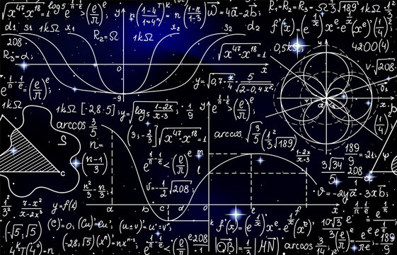
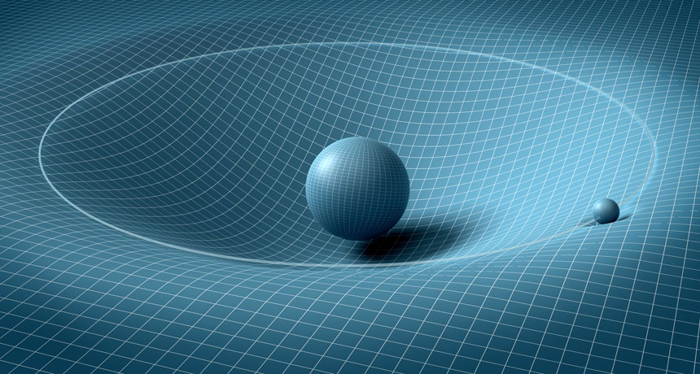
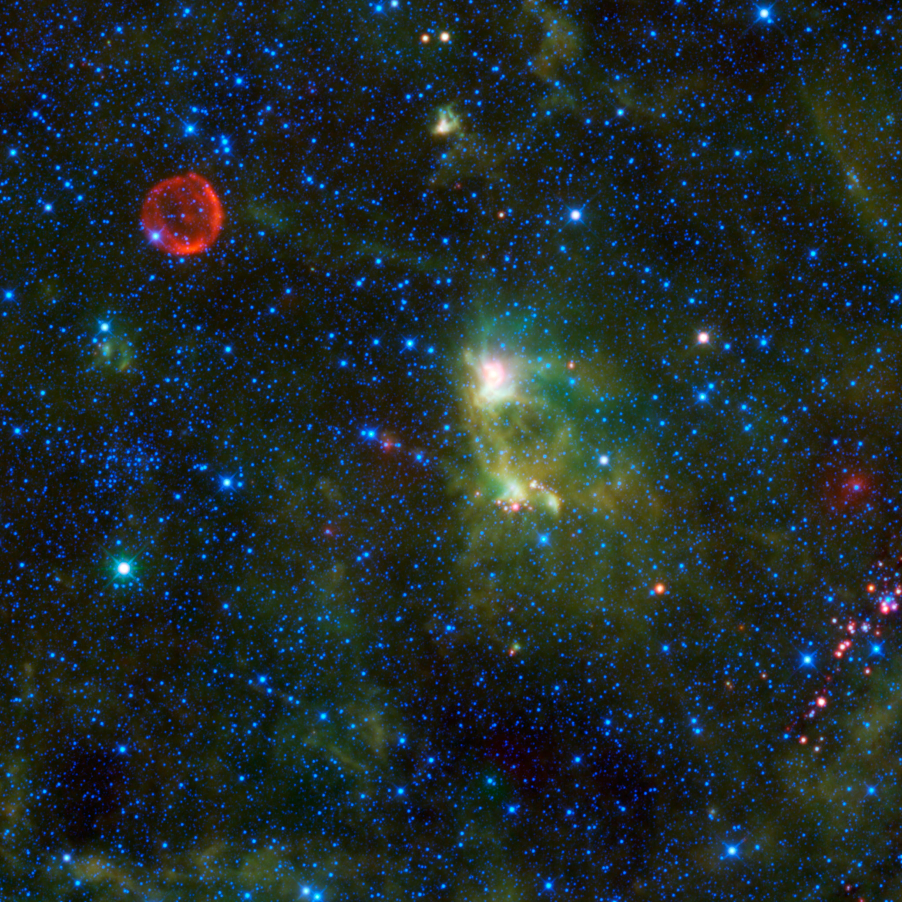

Some of the key ideas that shaped the field of astrophysics.

General Relativity
General Relativity is a physical theory developed by Albert Einstein in 1915. It states that space and time are part of the same entity known as “spacetime”. The presence of mass bends the “fabric” of spacetime causing what we perceive as gravity. This also causes time to “slow down” near warped spacetime in a phenomenon known as time dilation. More specifically, time dilation describes the difference in the elapsed times of two clocks with a relative velocity between them or a difference in the strength of gravity in their locations. Although General Relativity produces almost the same predictions as Newtonian Mechanics, this small discrepency between the theories in time allowed the theory to be tested in an experiment known as the Hafele-Keating experiment. In this experiment, four atomic clocks were taken aboard commercial arliners which flew around the world twice. All four of these clocks were then compared with the ones relatively stationary on Earth. As predicted by the theory, the clocks that were on the aircrafts were slightly behind the clocks that were on Earth.

The Discovery Of Black Holes
Until the discovery of Cygnus X-1 6,197 light years away, black holes were purely theoretical objects. In fact, after realizing that black holes were predicted by his theory of General Relativity, Einstein repeatedly denied that they could form. In 1939, he even published a paper where he mistakenly argued that it was physically impossible for a collapsing star to form a singularity and acquire a Schwarzchild radius, or event horizon. Cygnus X-1 is a stellar-mass black hole (15 times mass of the Sun). It was discovered during a 1964 sounding rocket flight and later confirmed to be a black hole, opening up new avenues in the study of astrophysics. Likewise, the discovery of black holes exposed fundamental flaws in the theory of general relativity such as the breakdown of mathematics concerning the singularity of the black hole. An image of Cygnus X-1 6 is shown on the right.
Tycho Brahe's Observation Of A Supernova
Tycho Brahe was a Danish astronomer who, in 1572, noticed a "new star" in the constellation of Cassiopeia. Little did he know that this star was actually a powerful supernova, a violent explosion triggered at the end of a star's life. Over the next few decades, Brahe used detailed observations of this supernova along with other interstellar phenomenon to argue against the Ptolemaic model of the Universe which posited a stationary Earth in the center. He did so by stating that the "star" was much farther away than the Moon. This would mean that the Universe, beyond the Sun and planets, had the ability to move and change. "Tycho's supernova", as it came to be known, was one of the few recorded supernovas in the Milky Way Galaxy.

Gravitational Waves
On September 14, 2015, gravitational waves were detected for the first time by the LIGO detectors. These waves are tiny disturbances in spacetime that travel outwards from violent cosmic events that cause spacetime to contract and expand. The 2015 discovery detected gravitational waves from the collision of two massive black holes (between 29 and 36 solar masses) 1.3 billion years ago. Due to the incredibly large masses of the black holes, "ripples" were created through spacetime. Gravitational waves are extremely important in modern astrophysics since they provide scientists with information from the earliest stages of the Universe and how matter and energy have interacted in the past.